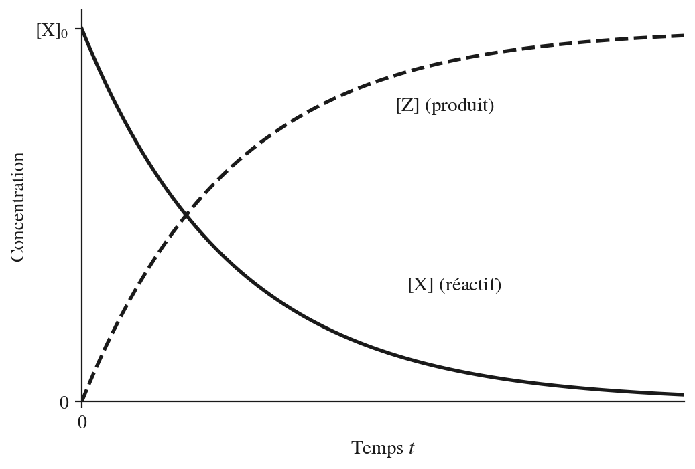
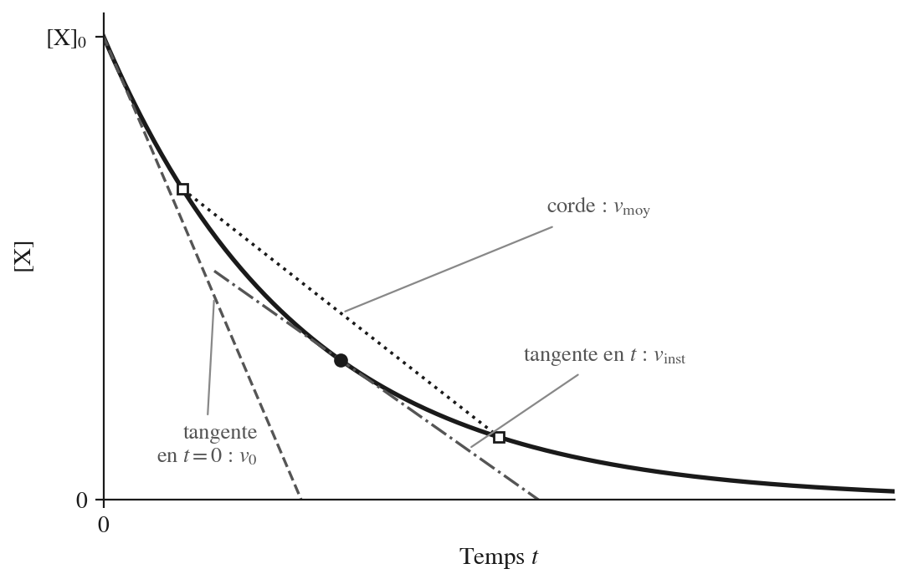
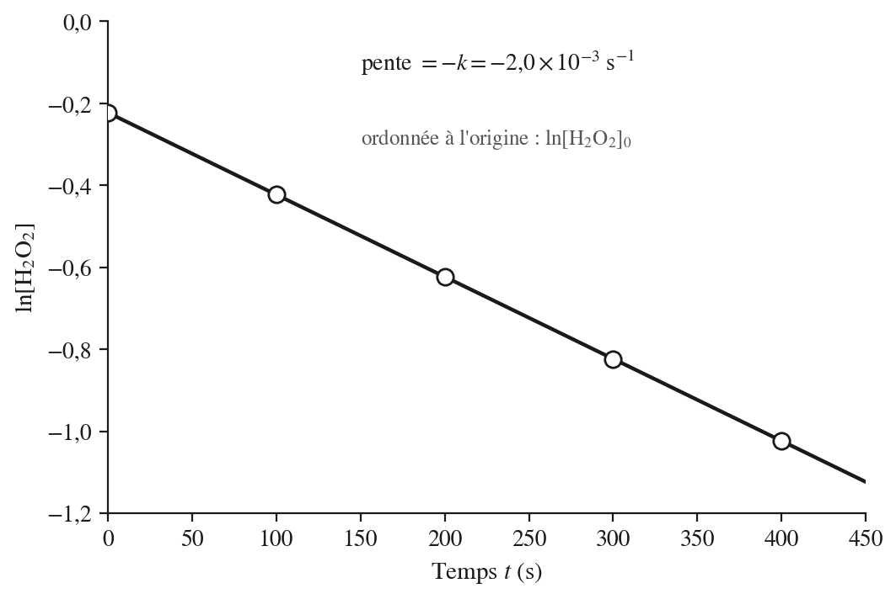
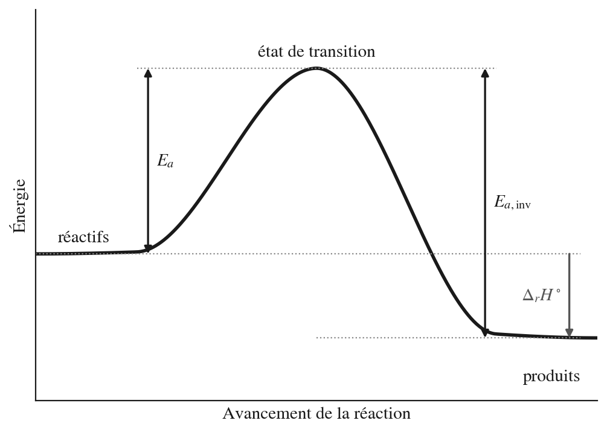
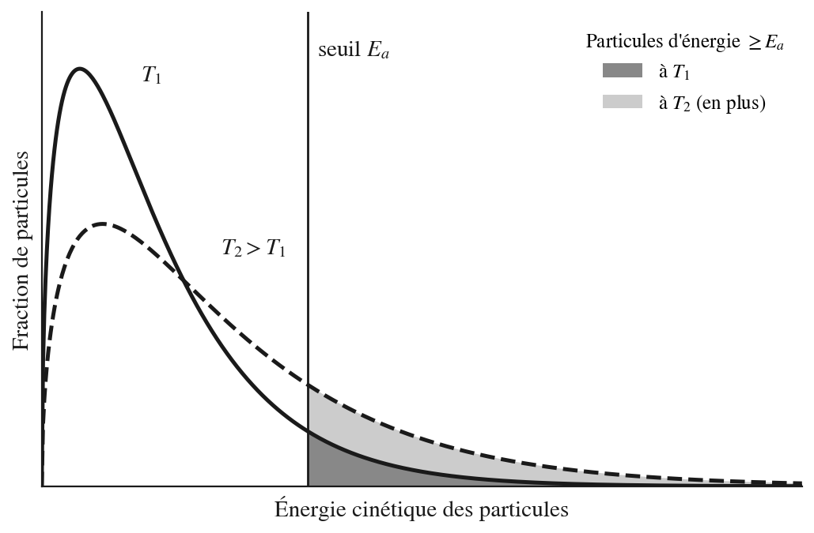
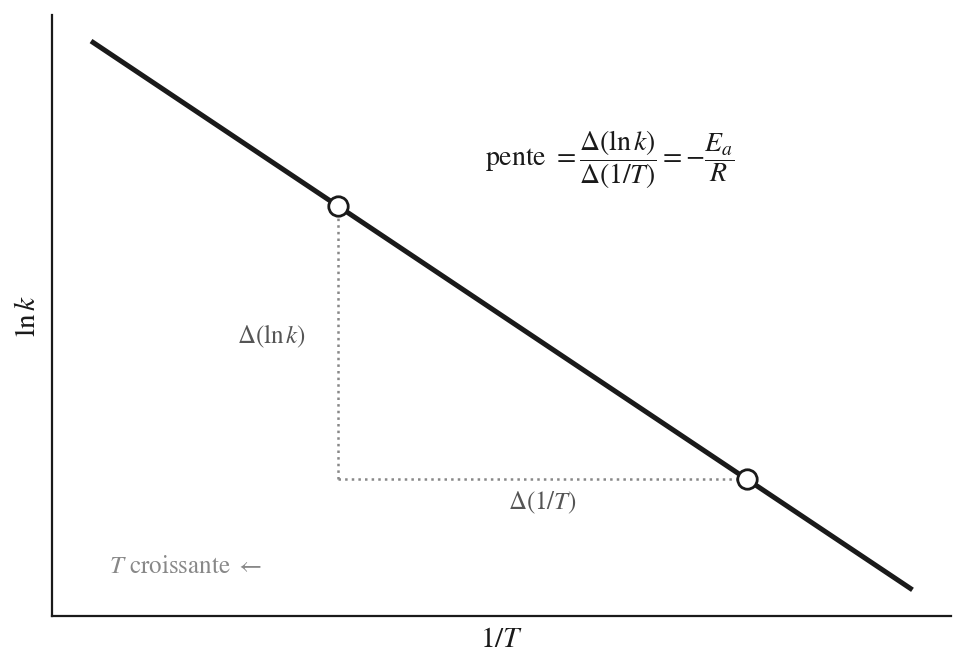
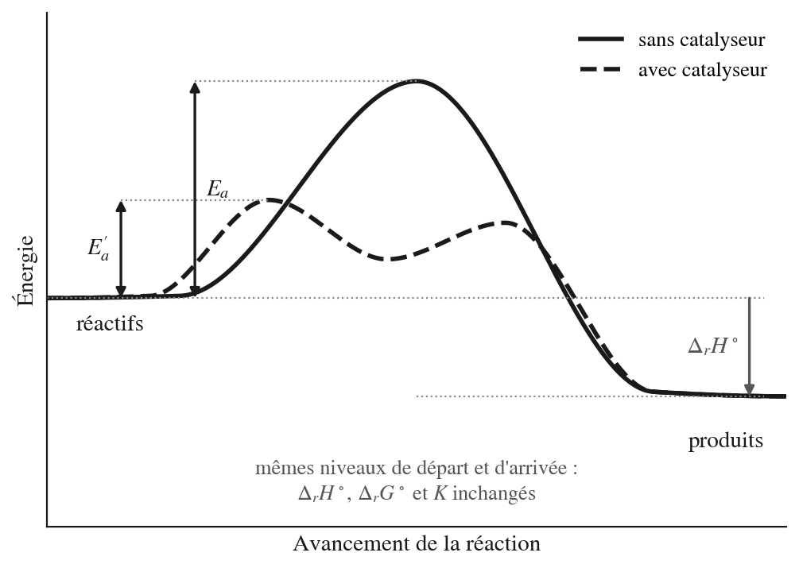
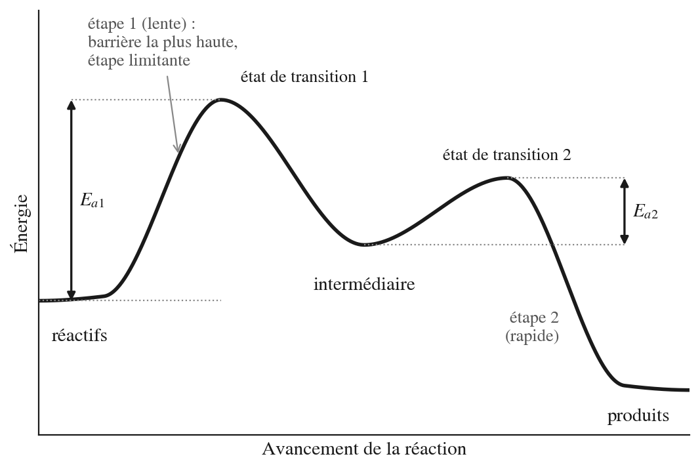
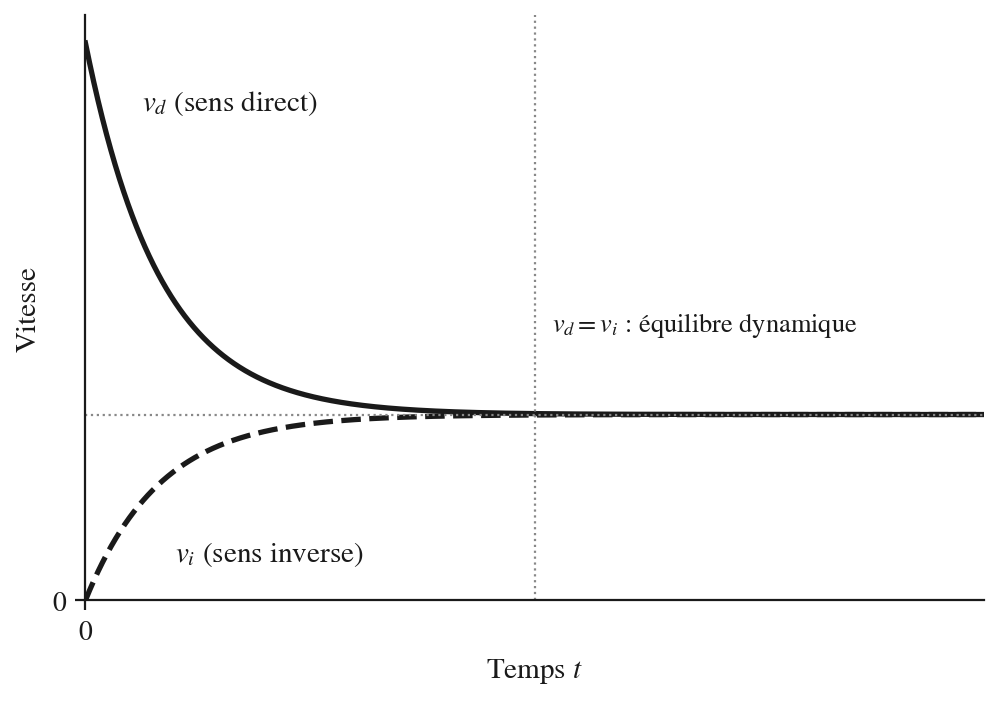

10 Vitesse de réaction
Enseignant·e ? Si vous avez une clé pilote (ou un jeton prof), ouvrez le suivi de votre classe.
Élève ? S’entraîner sur ce chapitre
Une remarque ? Écrivez-nous — coquille, question, suggestion.
10.1 Fiche de démarrage
Ce que nous savons déjà — Nous savons qu’une réaction chimique transforme des réactifs en produits, et qu’elle suppose des collisions entre particules (théorie des collisions). Nous savons représenter l’énergie d’une réaction par un diagramme enthalpique et lire \(\Delta_r H^\circ\). Nous savons, depuis le chapitre Thermochimie 2, qu’une réaction thermodynamiquement favorable (spontanée) n’est pas forcément rapide : \(\Delta_r G^\circ\) ne dit rien du temps.
Ce que ce chapitre construit — Ce chapitre répond à la question laissée ouverte : à quelle vitesse une réaction se déroule-t-elle, et de quoi dépend-elle ? Nous apprendrons d’abord à mesurer une vitesse, puis à la relier aux concentrations par la loi de vitesse. Nous expliquerons ensuite pourquoi la température et les catalyseurs agissent, grâce à la barrière d’énergie d’activation et à la loi d’Arrhenius. Nous verrons comment une réaction se déroule réellement, étape par étape, et nous ferons le pont vers l’équilibre dynamique, où les réactions directe et inverse ont la même vitesse.
Ce que nous saurons faire — À la fin de ce chapitre, nous saurons calculer une vitesse moyenne, instantanée et initiale, déterminer l’ordre d’une réaction à partir de vitesses initiales et calculer la constante de vitesse \(k\) avec ses unités, utiliser la loi intégrée d’ordre \(1\) et le temps de demi-réaction. Nous saurons extraire une énergie d’activation d’une série de constantes de vitesse mesurées à plusieurs températures, expliquer l’effet d’un catalyseur sur le profil énergétique, lire un mécanisme simple et reconnaître l’étape limitante. Nous pourrons enfin expliquer pourquoi un catalyseur n’affecte pas la position de l’équilibre, notion que nous formaliserons au chapitre Équilibre chimique 1.
10.2 Rappels avant de commencer
Nous savons déjà que…
- Une réaction chimique ne se produit que si les particules se heurtent avec une orientation favorable et une énergie suffisante : c’est la théorie des collisions.
- La concentration molaire \([\text{X}]\), en \(\text{mol} \cdot \text{L}^{-1}\), mesure la quantité de matière dissoute par litre de solution ; plus elle est élevée, plus les collisions sont fréquentes.
- Les coefficients stœchiométriques d’une équation donnent les proportions dans lesquelles les réactifs sont consommés et les produits formés.
- Une réaction s’accompagne d’une variation d’enthalpie \(\Delta_r H^\circ\), représentée sur un diagramme énergie-avancement avec deux niveaux : réactifs et produits (chapitre Thermochimie 1).
- Une réaction très favorable (\(\Delta_r G^\circ\) très négatif) n’est pas forcément rapide : \(\Delta_r G^\circ\) dit si la réaction est thermodynamiquement favorable (spontanée), pas à quelle vitesse elle a lieu (chapitre Thermochimie 2).
- La température absolue s’exprime en kelvins, \(T\,(\text{K}) = \theta\,(^\circ\text{C}) + 273{,}15\), et le logarithme népérien et l’exponentielle sont des fonctions réciproques : \(\ln(e^x) = x\), \(\ln 1 = 0\).
Ces acquis sont les points d’appui de ce chapitre : les concentrations et les collisions expliquent la loi de vitesse, le diagramme énergétique devient celui de la barrière d’activation, et les kelvins comme le logarithme interviennent dans la loi d’Arrhenius.
Mini-test de positionnement — vérifions nos acquis avant de continuer :
- Une solution contient \(0{,}40\ \text{mol}\) de \(\ce{HCl}\) dissous dans \(200\ \text{mL}\) de solution. Quelle est la concentration \([\ce{HCl}]\) ?
- Pour une réaction exothermique, les produits se trouvent-ils à un niveau d’énergie supérieur ou inférieur à celui des réactifs ?
- Citons deux conditions nécessaires pour qu’une collision entre particules soit efficace.
- Dans \(\ce{N2 + 3H2 -> 2NH3}\), si \(0{,}30\ \text{mol}\) de \(\ce{H2}\) sont consommées, combien de moles de \(\ce{NH3}\) sont formées ? Convertissons enfin \(25\ ^\circ\text{C}\) en kelvins.
Réponses : (1) \([\ce{HCl}] = 2{,}0\ \text{mol/L}\) ; (2) inférieur, car \(\Delta_r H^\circ < 0\) ; (3) orientation favorable et énergie suffisante ; (4) \(0{,}20\ \text{mol}\) de \(\ce{NH3}\) ; \(298\ \text{K}\).
Si nous répondons sans hésiter aux quatre questions, nous sommes prêts : passons directement à la Zone 2. Si certaines réponses hésitent, relisons les points ci-dessus et les chapitres cités avant de continuer.
10.3 Cours et exercices
10.3.1 Mesurer la vitesse d’une réaction
Conception courante : on imagine souvent qu’une réaction se produit instantanément dès que les réactifs sont mélangés, ou, à l’inverse, qu’une réaction très favorable sera forcément rapide. Le chapitre Thermochimie 2 a montré que ce second raccourci est faux : \(\Delta_r G^\circ\) indique si une transformation est thermodynamiquement favorable (spontanée), il ne dit rien du temps qu’elle prend. Une bouteille d’eau oxygénée se conserve des mois, alors que sa décomposition en eau et en dioxygène est fortement favorable (\(\Delta_r G^\circ \approx -103\ \text{kJ/mol}\) pour \(\ce{H2O2(aq) -> H2O(l) + 1/2 O2(g)}\), d’après l’annexe de Thermochimie 2). Pour décrire le temps, il faut une grandeur nouvelle : la vitesse de réaction.
Analogie : pensons à une file d’attente qui se vide progressivement. On mesure la vitesse à laquelle elle diminue par le nombre de personnes qui partent par minute. De même, on mesure la vitesse d’une réaction par la variation de concentration par unité de temps. Limite de l’analogie : dans une file, chaque personne part indépendamment ; dans une réaction, la disparition des réactifs et l’apparition des produits sont liées par les coefficients stœchiométriques.
Au niveau macroscopique : en laboratoire, on suit l’avancement d’une réaction en mesurant une grandeur proportionnelle à la concentration d’une espèce : volume de gaz dégagé, pression, absorbance d’une solution colorée, conductivité, masse. On repère ainsi comment la concentration d’un réactif diminue, et celle d’un produit augmente, au cours du temps.

Au niveau particulaire : les molécules de réactifs se heurtent, se réarrangent et donnent de nouvelles espèces. Au début, les réactifs sont nombreux et les collisions fréquentes : la réaction est rapide. À mesure que les réactifs sont consommés, les collisions deviennent plus rares et la réaction ralentit.
Au niveau symbolique : pour la réaction générique
\[a\,\text{X} + b\,\text{Y} \rightarrow c\,\text{Z} + d\,\text{W}\]
la vitesse de réaction \(v\) s’exprime en tenant compte des coefficients stœchiométriques :
\[v = -\frac{1}{a}\frac{\Delta[\text{X}]}{\Delta t} = -\frac{1}{b}\frac{\Delta[\text{Y}]}{\Delta t} = +\frac{1}{c}\frac{\Delta[\text{Z}]}{\Delta t} = +\frac{1}{d}\frac{\Delta[\text{W}]}{\Delta t}\]
Le signe négatif devant les réactifs garantit que \(v\) est toujours positive. L’unité de \(v\) est \(\text{mol} \cdot \text{L}^{-1} \cdot \text{s}^{-1}\).
Conception courante : on pourrait croire que tous les réactifs disparaissent à la même vitesse. C’est faux dès que les coefficients stœchiométriques diffèrent : dans \(\ce{X + 3Y -> 2W}\), \(\text{Y}\) est consommé trois fois plus vite que \(\text{X}\). Diviser par le coefficient ramène toutes ces vitesses partielles à une vitesse unique de réaction.
On distingue trois vitesses :
- la vitesse moyenne sur un intervalle \([t_1,\, t_2]\) : le quotient \(\Delta[\text{X}] / \Delta t\), corrigé du coefficient ;
- la vitesse instantanée à un instant \(t\) : la pente de la tangente à la courbe \([\text{X}](t)\) en ce point ;
- la vitesse initiale \(v_0\) : la vitesse instantanée à \(t = 0\), là où les concentrations sont connues avec précision.

en présence d’ions iodure, qui l’accélèrent, la réaction \(\ce{H2O2(aq) -> H2O(l) + 1/2 O2(g)}\) se suit en mesurant le volume de \(\ce{O2}\) dégagé, d’où l’on déduit \([\ce{H2O2}]\) :
| \(t\ (\text{s})\) | \(0\) | \(100\) | \(200\) | \(300\) | \(400\) | \(500\) |
|---|---|---|---|---|---|---|
| \([\ce{H2O2}]\ (\text{mol/L})\) | \(0{,}800\) | \(0{,}655\) | \(0{,}536\) | \(0{,}439\) | \(0{,}359\) | \(0{,}294\) |
Vitesse moyenne de \(0\) à \(200\ \text{s}\). Le coefficient de \(\ce{H2O2}\) est \(1\) :
\[v = -\frac{0{,}536 - 0{,}800}{200} = 1{,}3 \times 10^{-3}\ \text{mol} \cdot \text{L}^{-1} \cdot \text{s}^{-1}\]
La vitesse de formation de \(\ce{O2}\) (coefficient \(\tfrac{1}{2}\)) vaut la moitié de \(v\), soit \(6{,}6 \times 10^{-4}\ \text{mol} \cdot \text{L}^{-1} \cdot \text{s}^{-1}\). Entre \(200\) et \(400\ \text{s}\), le même calcul donne \(v = 8{,}9 \times 10^{-4}\ \text{mol} \cdot \text{L}^{-1} \cdot \text{s}^{-1}\) : la réaction ralentit, comme le prévoit le niveau particulaire.
- Pour la réaction \(\ce{N2(g) + 3H2(g) -> 2NH3(g)}\), la vitesse de consommation de \(\ce{H2}\) est \(0{,}30\ \text{mol} \cdot \text{L}^{-1} \cdot \text{s}^{-1}\). Calculons la vitesse de réaction \(v\) et la vitesse de formation de \(\ce{NH3}\).1
- Pour la réaction \(\ce{2NO2(g) -> 2NO(g) + O2(g)}\), \([\ce{NO2}]\) passe de \(0{,}80\) à \(0{,}65\ \text{mol} \cdot \text{L}^{-1}\) en \(30\ \text{s}\). Calculons la vitesse moyenne de réaction sur cet intervalle.2
- Dans l’exemple travaillé, la vitesse moyenne de \(400\) à \(500\ \text{s}\) est-elle plus grande, plus petite ou égale à celle de \(0\) à \(100\ \text{s}\) ? Calculons-les et interprétons au niveau particulaire.3
- Distinguons en une phrase vitesse initiale et vitesse instantanée, puis disons pourquoi on mesure souvent la vitesse initiale pour comparer des expériences.4
10.3.2 La loi de vitesse : l’effet de la concentration
Conception courante : on pourrait croire que doubler la concentration d’un réactif double toujours la vitesse. En réalité, l’effet de la concentration dépend de chaque réaction : il peut être nul, linéaire ou quadratique.
Au niveau macroscopique : en laboratoire, on observe que doubler la concentration d’un réactif peut doubler la vitesse, la quadrupler, ou ne pas l’affecter du tout, selon la réaction étudiée. Il n’existe pas de relation universelle : chaque réaction obéit à sa propre loi de vitesse, déterminée par l’expérience. Un exemple : le blanchiment d’un tissu est plus rapide dans de l’eau de Javel concentrée que diluée.
Au niveau particulaire : une concentration plus élevée signifie plus de particules par unité de volume, donc des collisions plus fréquentes. La proportion de collisions efficaces reste la même, mais leur nombre par seconde augmente. L’effet exact sur la vitesse dépend de la façon dont la réaction se déroule, étape par étape (section Mécanisme et étapes élémentaires) : c’est pourquoi il faut le mesurer.
Au niveau symbolique : pour la réaction générique \(a\,\text{X} + b\,\text{Y} \rightarrow \text{produits}\), la loi de vitesse s’écrit
\[v = k \cdot [\text{X}]^m \cdot [\text{Y}]^n\]
| Symbole | Nom | Remarque |
|---|---|---|
| \(k\) | constante de vitesse | dépend de la température, pas de la concentration |
| \(m\) | ordre partiel par rapport à X | déterminé expérimentalement |
| \(n\) | ordre partiel par rapport à Y | déterminé expérimentalement |
| \(m + n\) | ordre global | somme des ordres partiels |
Conception courante : les ordres partiels \(m\) et \(n\) n’ont aucun lien nécessaire avec les coefficients stœchiométriques \(a\) et \(b\). La décomposition \(\ce{2N2O5 -> 4NO2 + O2}\) a pour coefficient \(2\) devant \(\ce{N2O5}\), mais sa vitesse est proportionnelle à \([\ce{N2O5}]\) : l’ordre est \(1\). Les ordres reflètent le mécanisme et ne se déterminent que par l’expérience.
Détermination expérimentale des ordres : on réalise plusieurs expériences en ne faisant varier qu’un seul réactif à la fois, et on mesure la vitesse initiale \(v_0\). En comparant deux expériences où \([\text{X}]\) double :
| Effet sur \(v_0\) quand \([\text{X}]\) double | Ordre par rapport à X |
|---|---|
| \(v_0\) reste constante | \(0\) |
| \(v_0\) double | \(1\) |
| \(v_0\) quadruple | \(2\) |
Unités de \(k\) : les unités dépendent de l’ordre global \(p = m + n\) et se déduisent en isolant \(k\) dans la loi de vitesse :
\[[k] = \text{mol}^{1-p} \cdot \text{L}^{p-1} \cdot \text{s}^{-1}\]
Pour un ordre global \(1\), \([k] = \text{s}^{-1}\) ; pour un ordre global \(2\), \([k] = \text{L} \cdot \text{mol}^{-1} \cdot \text{s}^{-1}\) ; pour un ordre global \(3\), \([k] = \text{L}^2 \cdot \text{mol}^{-2} \cdot \text{s}^{-1}\).
pour la réaction \(\ce{X + Y -> Z}\) qui obéit à \(v = k\,[\text{X}]\,[\text{Y}]^2\), on mesure \(v_0 = 4{,}0 \times 10^{-3}\ \text{mol} \cdot \text{L}^{-1} \cdot \text{s}^{-1}\) avec \([\text{X}]_0 = 0{,}10\ \text{mol/L}\) et \([\text{Y}]_0 = 0{,}20\ \text{mol/L}\).
\[k = \frac{v_0}{[\text{X}]\,[\text{Y}]^2} = \frac{4{,}0 \times 10^{-3}}{0{,}10 \times (0{,}20)^2} = 1{,}0\ \text{L}^2 \cdot \text{mol}^{-2} \cdot \text{s}^{-1}\]
L’ordre global est \(3\) : les unités de \(k\) sont bien \(\text{L}^2 \cdot \text{mol}^{-2} \cdot \text{s}^{-1}\), conformément à l’expression de \([k]\) ci-dessus.
- Pour la réaction \(\ce{2NO(g) + O2(g) -> 2NO2(g)}\), on mesure : expérience 1, \([\ce{NO}] = 0{,}10\), \([\ce{O2}] = 0{,}10\), \(v_0 = 1{,}2 \times 10^{-3}\ \text{mol} \cdot \text{L}^{-1} \cdot \text{s}^{-1}\) ; expérience 2, \([\ce{NO}] = 0{,}20\), \([\ce{O2}] = 0{,}10\), \(v_0 = 4{,}8 \times 10^{-3}\). Quel est l’ordre par rapport à \(\ce{NO}\) ?5
- Pour la même réaction, l’expérience 3 donne \([\ce{NO}] = 0{,}10\), \([\ce{O2}] = 0{,}20\), \(v_0 = 2{,}4 \times 10^{-3}\). Quel est l’ordre par rapport à \(\ce{O2}\) ? Écrivons la loi de vitesse complète.6
- Calculons \(k\) pour la loi de vitesse de l’exercice 2 et précisons ses unités.7
- Pour \(\ce{2N2O5 -> 4NO2 + O2}\), on observe \(v = k\,[\ce{N2O5}]\). Si l’on triple \([\ce{N2O5}]\), par quel facteur la vitesse est-elle multipliée ? Cette loi se lit-elle sur les coefficients de l’équation ?8
10.3.3 Comment la concentration évolue dans le temps : l’ordre 1
Conception courante : on imagine souvent qu’une réaction avance à vitesse constante et se termine à une date précise, comme un réservoir qui se vide à débit constant. Les courbes de l’exemple de la section précédente montrent autre chose : la vitesse diminue sans cesse, et la concentration tend vers zéro sans jamais l’atteindre en un temps fini.
Au niveau macroscopique : pour de nombreuses réactions (la décomposition de l’eau oxygénée, la désintégration d’un noyau radioactif), on observe que le temps nécessaire pour diviser la concentration par deux est toujours le même, quelle que soit la concentration de départ. Ce temps est le temps de demi-réaction \(t_{1/2}\).
Au niveau particulaire : si la vitesse est proportionnelle à la concentration (ordre \(1\)), chaque molécule a, à chaque seconde, la même probabilité de réagir, indépendamment de ses voisines. Quand il reste deux fois moins de molécules, il y a deux fois moins de réactions par seconde : la courbe décroît par fractions constantes en temps égaux.
Au niveau symbolique : pour une réaction d’ordre \(1\) par rapport à un réactif \(\text{X}\) de coefficient stœchiométrique \(1\), \(v = -\dfrac{d[\text{X}]}{dt} = k\,[\text{X}]\). L’intégration de cette loi, que nous admettons, donne
\[\ln[\text{X}] = \ln[\text{X}]_0 - k\,t \qquad \text{soit} \qquad [\text{X}] = [\text{X}]_0\,e^{-k\,t}\]
Un graphe de \(\ln[\text{X}]\) en fonction de \(t\) est donc une droite de pente \(-k\) : c’est le test graphique d’un ordre \(1\). Le temps de demi-réaction se déduit en posant \([\text{X}] = [\text{X}]_0/2\) :
\[t_{1/2} = \frac{\ln 2}{k}\]
Il ne dépend pas de \([\text{X}]_0\), ce qui caractérise l’ordre \(1\).

reprenons les données de la décomposition de l’eau oxygénée. Calculons \(\ln[\ce{H2O2}]\) :
| \(t\ (\text{s})\) | \(0\) | \(100\) | \(200\) | \(300\) | \(400\) |
|---|---|---|---|---|---|
| \(\ln[\ce{H2O2}]\) | \(-0{,}223\) | \(-0{,}423\) | \(-0{,}623\) | \(-0{,}823\) | \(-1{,}023\) |
La valeur diminue de \(0{,}200\) tous les \(100\ \text{s}\) : les points sont alignés, la pente vaut \(-2{,}0 \times 10^{-3}\ \text{s}^{-1}\). La réaction est d’ordre \(1\) (par rapport à \(\ce{H2O2}\), à concentration en ions iodure fixée), avec \(k = 2{,}0 \times 10^{-3}\ \text{s}^{-1}\). On en déduit :
\[t_{1/2} = \frac{\ln 2}{2{,}0 \times 10^{-3}} = 3{,}5 \times 10^{2}\ \text{s} \qquad \text{et} \qquad [\ce{H2O2}](600\ \text{s}) = 0{,}800 \times e^{-1{,}2} = 0{,}24\ \text{mol/L}\]
- Une réaction d’ordre \(1\) a pour constante \(k = 3{,}5 \times 10^{-2}\ \text{s}^{-1}\). Calculons son temps de demi-réaction, puis la fraction de réactif restant après \(3\,t_{1/2}\).9
- Pour une réaction qui consomme un réactif X, on mesure \([\text{X}] = 0{,}100\ ;\ 0{,}060\ ;\ 0{,}036\ ;\ 0{,}022\ \text{mol/L}\) à \(t = 0\ ;\ 20\ ;\ 40\ ;\ 60\ \text{s}\). Montrons que l’ordre est \(1\) et calculons \(k\).10
- Pour la réaction de l’exemple travaillé, au bout de combien de temps ne reste-t-il que \(10\ \%\) de l’eau oxygénée de départ ?11
- Un élève affirme : « une réaction d’ordre \(1\) est terminée au bout de deux temps de demi-réaction ». Qu’en pensons-nous ?12
10.3.4 La barrière d’activation
Conception courante : on croit souvent qu’une réaction exothermique démarre de lui-même (sans amorce), puisqu’elle libère de l’énergie. C’est inexact : le bois brûle en libérant beaucoup de chaleur, mais il ne s’enflamme pas seul à température ambiante. Il faut une flamme pour l’allumer. Le chapitre Thermochimie 2 a posé l’idée : entre l’état de départ et l’état d’arrivée, il y a une barrière à franchir. Nous la précisons ici.
Analogie : imaginons une bille posée dans une cuvette, avec une bosse à franchir avant de descendre dans une vallée plus basse. Même si la vallée est plus basse (état final plus stable), la bille ne peut pas y accéder sans l’énergie nécessaire pour franchir la bosse. Limite de l’analogie : les particules ne « roulent » pas ; elles acquièrent leur énergie par des collisions aléatoires avec les particules voisines.
Au niveau macroscopique : certaines réactions ne démarrent qu’avec un apport d’énergie initial (chaleur, lumière, étincelle). Sans cet apport, elles ne se produisent pas, ou très lentement, même si leur bilan est très favorable.
Au niveau particulaire : pour réagir, deux particules doivent se heurter avec une orientation favorable, mais aussi avec une énergie suffisante pour fragiliser leurs liaisons avant d’en former de nouvelles. Au sommet de la barrière, l’ensemble des atomes forme un arrangement instable et éphémère, l’état de transition. L’énergie d’activation \(E_a\) est l’énergie qu’il faut apporter aux réactifs pour atteindre cet état. C’est un seuil : seules les collisions dont l’énergie dépasse \(E_a\) peuvent conduire à la réaction. Ce n’est pas l’énergie cinétique moyenne des particules, qui est bien plus petite à température ambiante : une toute petite fraction des collisions dépasse le seuil, ce qui explique que les réactions ne soient pas instantanées.
Au niveau symbolique : sur un profil énergétique, \(E_a\) est la différence d’énergie entre l’état de transition (sommet de la barrière) et les réactifs :
\[E_a = E_{\text{état de transition}} - E_{\text{réactifs}}\]
La variation d’enthalpie de la réaction, \(\Delta_r H^\circ\), est la différence entre le niveau des produits et celui des réactifs, comme au chapitre Thermochimie 1. Pour la réaction inverse, le chemin est parcouru en sens contraire : le sommet est le même, le niveau de départ est celui des produits.

\[E_{a,\text{inv}} = E_a - \Delta_r H^\circ\]
Plus \(E_a\) est élevée, plus la fraction de collisions capables de réagir est faible, et plus la réaction est lente. L’énergie d’activation est une propriété de la réaction : elle ne dépend ni de la concentration ni, en première approximation, de la température.
Attention : \(E_a\) et \(\Delta_r H^\circ\) sont deux grandeurs indépendantes. \(\Delta_r H^\circ\) dit si la réaction libère ou absorbe de l’énergie ; \(E_a\) dit à quelle hauteur est la barrière. Une réaction très exothermique peut avoir une \(E_a\) élevée (réaction lente), et inversement.
une réaction exothermique a \(E_a = 50\ \text{kJ/mol}\) et \(\Delta_r H^\circ = -120\ \text{kJ/mol}\) ; une réaction endothermique a \(E_a = 90\ \text{kJ/mol}\) et \(\Delta_r H^\circ = +40\ \text{kJ/mol}\). Pour chacune, calculons \(E_{a,\text{inv}}\) avec la relation ci-dessus :
\[E_{a,\text{inv}} = 50 - (-120) = 170\ \text{kJ/mol} \qquad \text{et} \qquad E_{a,\text{inv}} = 90 - 40 = 50\ \text{kJ/mol}\]
La réaction exothermique est facile à franchir dans le sens direct et très difficile dans le sens inverse ; pour la réaction endothermique, c’est l’inverse qui est facile.
- Une réaction a \(E_a = 50\ \text{kJ/mol}\) et \(\Delta_r H^\circ = -120\ \text{kJ/mol}\) ; une autre a \(E_a = 30\ \text{kJ/mol}\) et \(\Delta_r H^\circ = -20\ \text{kJ/mol}\). Laquelle a la barrière la plus haute pour la réaction inverse ? Justifions.13
- Deux réactions X et Y ont respectivement \(E_a = 30\ \text{kJ/mol}\) et \(E_a = 80\ \text{kJ/mol}\). À même température, concentrations égales et même nombre de collisions, laquelle est la plus rapide ? Justifions.14
- Le bois est un combustible exothermique mais ne s’enflamme pas de lui-même à température ambiante. Expliquons en termes d’énergie d’activation.15
- Traçons schématiquement les profils de deux réactions : (a) exothermique rapide (\(E_a\) faible) ; (b) endothermique lente (\(E_a\) élevée). Annotons \(E_a\) et \(\Delta_r H^\circ\) sur chaque profil.16
10.3.5 La température : la loi d’Arrhenius
Conception courante : on sait par expérience que chauffer accélère une réaction, mais on explique souvent cela par « les particules bougent plus vite ». C’est insuffisant : leur vitesse moyenne n’augmente que de quelques pour cent, alors que la vitesse de la réaction peut doubler. Ce qui change beaucoup, c’est la fraction des collisions dont l’énergie dépasse le seuil \(E_a\).
Au niveau macroscopique : autour de la température ambiante, une élévation de \(10\ ^\circ\text{C}\) multiplie la vitesse de nombreuses réactions par \(2\) ou \(3\). Cette règle empirique n’est qu’un ordre de grandeur : le facteur dépend de la réaction, comme nous le calculerons plus bas. C’est pour cela qu’on conserve les aliments au froid et qu’on cuit à chaud.
Au niveau particulaire : à une température donnée, les particules n’ont pas toutes la même énergie cinétique. La distribution de Maxwell-Boltzmann décrit cette répartition : la plupart des particules ont une énergie proche de la moyenne, et une petite queue de particules très énergétiques s’étend vers la droite. Seule la fraction située au-delà du seuil \(E_a\) peut réagir. Quand la température augmente, la courbe s’aplatit et sa queue s’allonge : la fraction qui dépasse \(E_a\) augmente fortement, bien plus que l’énergie moyenne.

Au niveau symbolique : la fraction de particules dont l’énergie dépasse \(E_a\) est de l’ordre de \(e^{-E_a/(RT)}\), comme dans le chapitre Thermochimie 2. La constante de vitesse suit donc la loi d’Arrhenius, établie par Svante Arrhenius :
\[k = A \cdot e^{-E_a / (R\,T)}\]
où \(A\) est le facteur de fréquence (de même unité que \(k\), il rassemble la fréquence des collisions et leur orientation), \(E_a\) l’énergie d’activation en \(\text{J} \cdot \text{mol}^{-1}\), \(R = 8{,}314\ \text{J} \cdot \text{mol}^{-1} \cdot \text{K}^{-1}\) et \(T\) la température en kelvins. Le logarithme naturel donne la forme linéarisée :
\[\ln k = \ln A - \frac{E_a}{R} \cdot \frac{1}{T}\]
Un graphe de \(\ln k\) en fonction de \(1/T\) est une droite de pente \(-E_a/R\) : on mesure \(E_a\) sans connaître \(A\). Avec deux températures, on utilise le rapport :
\[\ln\frac{k_2}{k_1} = \frac{E_a}{R}\left(\frac{1}{T_1} - \frac{1}{T_2}\right)\]

Passons de \(298\ \text{K}\) à \(308\ \text{K}\) avec la forme de la loi d’Arrhenius à deux températures. Pour \(E_a = 50\ \text{kJ/mol}\) :
\[\ln\frac{k_2}{k_1} = \frac{50\,000}{8{,}314}\left(\frac{1}{298} - \frac{1}{308}\right) = 0{,}655 \quad \Rightarrow \quad \frac{k_2}{k_1} = 1{,}9\]
Pour \(E_a = 150\ \text{kJ/mol}\), le même calcul donne \(\ln(k_2/k_1) = 1{,}97\), soit un facteur \(7{,}1\). La règle « \(+10\ ^\circ\text{C}\) double la vitesse » est donc juste pour une barrière d’environ \(50\ \text{kJ/mol}\) et fausse pour une barrière plus haute : plus \(E_a\) est grande, plus la réaction est sensible à la température. À titre de comparaison, la vitesse quadratique moyenne des molécules ne croît que de \(\sqrt{308/298} - 1 \approx 1{,}7\ \%\).
- À \(298\ \text{K}\), \(k = 2{,}0 \times 10^{-3}\ \text{L} \cdot \text{mol}^{-1} \cdot \text{s}^{-1}\) et \(E_a = 60\ \text{kJ/mol}\). Calculons \(k\) à \(318\ \text{K}\) avec la forme de la loi d’Arrhenius à deux températures.17
- Calculons le facteur par lequel \(k\) est multiplié quand on passe de \(298\) à \(308\ \text{K}\) pour une réaction de \(E_a = 75\ \text{kJ/mol}\). La règle du doublement s’applique-t-elle ?18
- La pente d’un graphe \(\ln k\) en fonction de \(1/T\) vaut \(-7\,200\ \text{K}\). Calculons \(E_a\).19
- Expliquons en termes particulaires pourquoi une élévation de \(10\ ^\circ\text{C}\) peut doubler la vitesse d’une réaction, alors que la vitesse moyenne des molécules n’augmente que de quelques pour cent.20
10.3.6 Le catalyseur
Conception courante : on croit souvent qu’un catalyseur se consomme pendant la réaction, qu’il « pousse » la réaction plus loin, ou qu’il augmente la quantité de produit obtenue. Rien de tout cela n’est vrai : il est régénéré à la fin, il n’apparaît pas dans l’équation bilan, et il ne change que le temps nécessaire pour atteindre l’état final.
Au niveau macroscopique : l’eau oxygénée du chapitre précédent se décompose très lentement seule. Quelques gouttes d’une solution d’iodure, une pincée de dioxyde de manganèse ou un morceau de foie (qui contient la catalase) la font mousser en quelques secondes : le dioxygène se dégage vivement. Le pot catalytique d’une voiture utilise du platine pour transformer \(\ce{CO}\) et \(\ce{NO_x}\) en \(\ce{CO2}\), \(\ce{N2}\) et \(\ce{H2O}\) à des températures où ces réactions seraient négligeables seules.
Un catalyseur est une substance qui accélère une réaction sans être consommée dans la transformation globale.
Au niveau particulaire : le catalyseur offre un chemin réactionnel différent, en plusieurs étapes dont il est un partenaire : il se combine à un réactif, forme un intermédiaire, puis est régénéré. Ce nouveau chemin a une énergie d’activation plus basse. Une fraction beaucoup plus grande des collisions franchit la barrière : la réaction s’accélère.
Au niveau symbolique : sur un profil énergétique, le catalyseur abaisse le sommet de la barrière sans déplacer les niveaux des réactifs et des produits :

Si le facteur \(A\) est le même avec et sans catalyseur, l’équation d’Arrhenius donne
\[\frac{k_\text{cat}}{k_\text{non-cat}} = e^{\,(E_a - E_a')/(R\,T)}\]
où \(E_a'\) est l’énergie d’activation avec catalyseur. Comme les niveaux des réactifs et des produits ne bougent pas, le catalyseur ne modifie ni \(\Delta_r H^\circ\), ni \(\Delta_r G^\circ\), ni la constante d’équilibre \(K\). Il abaisse de la même façon la barrière de la réaction inverse : il accélère les deux sens, et l’équilibre est atteint plus vite, sans être déplacé (chapitre Équilibre chimique 1).
On distingue trois types de catalyseurs :
- Homogène : dans la même phase que les réactifs (ions \(\ce{I-}\) en solution aqueuse pour la décomposition de \(\ce{H2O2}\)) ;
- Hétérogène : dans une phase différente des réactifs (platine solide du pot catalytique, nickel solide pour l’hydrogénation des huiles végétales) ;
- Enzymatique : protéine du vivant, très spécifique (catalase, qui décompose \(\ce{H2O2}\) dans les cellules).
une réaction a \(E_a = 100\ \text{kJ/mol}\) ; un catalyseur ramène cette énergie à \(60\ \text{kJ/mol}\). À \(298\ \text{K}\) :
\[\frac{k_\text{cat}}{k_\text{non-cat}} = e^{\,(100\,000 - 60\,000)/(8{,}314 \times 298)} = e^{16{,}1} \approx 1{,}0 \times 10^{7}\]
Une baisse de \(40\ \text{kJ/mol}\) accélère donc la réaction d’un facteur de dix millions, sans rien changer à ce que la réaction produit à l’équilibre.
- Un pot catalytique utilise du platine solide pour convertir \(\ce{CO(g)}\) en \(\ce{CO2(g)}\). De quel type de catalyseur s’agit-il ? Justifions en une phrase.21
- Expliquons pourquoi un catalyseur ne modifie pas \(\Delta_r H^\circ\) d’une réaction, en nous appuyant sur le profil énergétique.22
- Une enzyme abaisse \(E_a\) de \(80\ \text{kJ/mol}\) à \(20\ \text{kJ/mol}\) à \(310\ \text{K}\). Calculons le rapport \(k_\text{cat}/k_\text{non-cat}\) avec la relation ci-dessus.23
- On ajoute un catalyseur à la synthèse industrielle d’une espèce. Comment changent : (a) le temps pour atteindre l’équilibre ; (b) la quantité de produit à l’équilibre ; (c) \(\Delta_r H^\circ\) ?24
10.3.7 Mécanisme et étapes élémentaires
Conception courante : on pense souvent que l’équation bilan décrit ce qui se passe réellement : par exemple que \(\ce{2NO2 + F2 -> 2NO2F}\) résulte du choc simultané de trois molécules. C’est presque toujours faux. Une collision réunissant trois particules avec la bonne orientation et la bonne énergie est extrêmement rare : la réaction se déroule en une suite d’actes plus simples, le mécanisme.
Au niveau macroscopique : l’équation bilan ne permet pas de prévoir la loi de vitesse. La décomposition \(\ce{2N2O5 -> 4NO2 + O2}\) a une vitesse proportionnelle à \([\ce{N2O5}]\) et non à \([\ce{N2O5}]^2\) ; la loi mesurée est une information sur la façon dont la réaction se déroule.
Au niveau particulaire : une étape élémentaire est un acte réel de choc ou de décomposition, entre une, deux (rarement trois) particules. Le nombre de particules qui y participent est sa molécularité (unimoléculaire, bimoléculaire). Le mécanisme est la suite d’étapes élémentaires. Un intermédiaire est une espèce formée dans une étape et consommée dans une suivante : il n’apparaît pas dans le bilan. Pour une étape élémentaire, et seulement pour elle, la loi de vitesse se lit sur les coefficients de ses réactifs. Quand une étape est beaucoup plus lente que les autres, c’est elle qui fixe la vitesse globale, comme le goulot d’une bouteille fixe le débit : c’est l’étape limitante.
Au niveau symbolique : la réaction \(\ce{2NO2 + F2 -> 2NO2F}\) se déroule en deux étapes élémentaires :
\[\ce{NO2 + F2 -> NO2F + F} \quad \text{(étape 1, lente)} \qquad \qquad \ce{NO2 + F -> NO2F} \quad \text{(étape 2, rapide)}\]
La somme des deux étapes redonne le bilan ; l’atome \(\ce{F}\) est un intermédiaire. L’étape 1 est limitante et bimoléculaire : \(v = k\,[\ce{NO2}]\,[\ce{F2}]\). C’est bien ce que l’expérience donne. L’ordre par rapport à \(\ce{NO2}\) est \(1\), alors que son coefficient dans le bilan est \(2\) : nous retrouvons que ordres et coefficients n’ont pas de lien automatique.
Sur le profil énergétique, chaque étape a sa barrière ; l’intermédiaire occupe un creux entre les deux sommets. L’étape limitante est celle dont la barrière est la plus haute.

Dans ce chapitre, nous nous limitons aux cas où l’étape limitante est la première étape du mécanisme ; la déduction de la loi de vitesse dans les autres cas relève d’un cours plus avancé.
un mécanisme proposé pour \(\ce{X + 2Y -> P}\) est :
\[\text{étape 1 (lente) : } \ce{X + Y -> Z} \qquad \qquad \text{étape 2 (rapide) : } \ce{Z + Y -> P}\]
- Bilan : la somme des deux étapes est \(\ce{X + 2Y -> P}\) (le \(\ce{Z}\) s’élimine), ce qui confirme le mécanisme.
- Intermédiaire : \(\ce{Z}\), formé à l’étape 1 et consommé à l’étape 2.
- Loi de vitesse : l’étape 1 est limitante, donc \(v = k\,[\ce{X}]\,[\ce{Y}]\), ordre \(1\) par rapport à \(\ce{Y}\) bien que son coefficient soit \(2\).
- Un mécanisme comporte les étapes \(\ce{A + B -> C}\) (lente) puis \(\ce{C + B -> D}\) (rapide). Écrivons le bilan, identifions l’intermédiaire et écrivons la loi de vitesse.25
- Pour le bilan \(\ce{X + 2Y -> P}\), un élève écrit la loi de vitesse \(v = k\,[\ce{X}]\,[\ce{Y}]^2\) « d’après les coefficients ». Quelle erreur commet-il ?26
- Traçons le profil énergétique d’un mécanisme en deux étapes dont la seconde est la plus lente, puis indiquons où se trouve l’intermédiaire et ce qui détermine la vitesse globale.27
10.3.8 Autres facteurs et pont vers l’équilibre
Conception courante : on croit souvent que, quand les concentrations ne changent plus, la réaction « s’est arrêtée ». Pour beaucoup de réactions, c’est faux : la réaction dans le sens direct et la réaction dans le sens inverse continuent, mais à la même vitesse. Rien ne change à l’échelle macroscopique, alors que tout continue à l’échelle des particules.
Au niveau macroscopique : en plus de la concentration, de la température et du catalyseur, d’autres facteurs agissent sur la vitesse :
| Facteur | Effet sur la vitesse | Explication particulaire |
|---|---|---|
| Surface de contact (solide) | plus la surface exposée est grande, plus la réaction est rapide (sucre en poudre contre sucre en morceaux, poussière de farine) | davantage de particules du solide sont accessibles aux collisions |
| Lumière | accélère certaines réactions (eau de Javel, photosynthèse) | un photon apporte l’énergie nécessaire pour franchir la barrière |
| Pression (gaz) | une pression plus élevée accélère la réaction | la concentration de chaque gaz augmente : c’est l’effet de la concentration |
La pression n’agit donc pas sur la constante \(k\) ; elle agit sur la vitesse \(v\) par l’intermédiaire des concentrations.
Au niveau particulaire : considérons une réaction réversible \(\ce{X <=> Z}\). Au départ, seul \(\text{X}\) est présent : la réaction directe est rapide, la réaction inverse est nulle. À mesure que \(\text{Z}\) s’accumule, la vitesse directe \(v_d\) diminue et la vitesse inverse \(v_i\) augmente.
Au niveau symbolique : il arrive un moment où \(v_d = v_i\) : les concentrations cessent de varier alors que les deux réactions se poursuivent. C’est l’équilibre dynamique :
\[v_d = v_i \qquad \text{(à l'équilibre)}\]

Pour une réaction élémentaire réversible, le rapport \(k_d/k_i\) fixe la composition à l’équilibre : c’est la constante d’équilibre \(K\), étudiée au chapitre Équilibre chimique 1. Un catalyseur multiplie \(k_d\) et \(k_i\) par le même facteur, ce qui accélère l’établissement de l’équilibre sans changer \(K\).
Un compromis industriel : la synthèse de l’ammoniac est exothermique, donc \(K\) diminue quand la température augmente (chapitre Thermochimie 2) : la thermodynamique demande de refroidir. Mais à basse température, \(k\) est minuscule : la cinétique demande de chauffer. On travaille vers \(400\) à \(500\ ^\circ\text{C}\), avec un catalyseur à base de fer et une pression élevée, comme compromis entre rendement et vitesse.
- Pour chaque situation, indiquons le facteur cinétique en jeu : (a) un morceau de zinc se dissout plus vite dans l’acide chlorhydrique quand il est en poudre ; (b) un comprimé effervescent fait plus vite des bulles dans l’eau chaude ; (c) la réaction d’un mélange gazeux s’accélère quand on le comprime.28
- Un élève affirme : « à l’équilibre, plus rien ne se passe ». Qu’en pensons-nous ?29
- Pour une réaction exothermique, expliquons pourquoi l’industrie ne travaille ni à très basse température, ni à très haute température.30
- Pour la réaction \(\ce{H2(g) + I2(g) -> 2HI(g)}\), \(v = k\,[\ce{H2}]\,[\ce{I2}]\). Quel est l’ordre global ? Si \([\ce{H2}] = [\ce{I2}] = 0{,}20\ \text{mol/L}\) et \(k = 0{,}063\ \text{L} \cdot \text{mol}^{-1} \cdot \text{s}^{-1}\), calculons \(v\).31
- Pour une réaction d’ordre \(2\) avec \(k = 0{,}50\ \text{L} \cdot \text{mol}^{-1} \cdot \text{s}^{-1}\), par quel facteur la vitesse est-elle multipliée si l’on triple la concentration du réactif unique ?32
- La constante de vitesse d’une réaction est \(k = 1{,}2 \times 10^{-2}\ \text{s}^{-1}\) à \(300\ \text{K}\) et \(k = 9{,}6 \times 10^{-2}\ \text{s}^{-1}\) à \(340\ \text{K}\). Calculons \(E_a\).33
- Expliquons pourquoi l’ordre d’une réaction ne peut pas être déduit de son équation bilan, et comment il est déterminé en pratique.34
- Pour la réaction \(\ce{X + Y -> Z}\), les données de vitesse initiale donnent : doubler \([\text{X}]\) double \(v\), doubler \([\text{Y}]\) ne change pas \(v\). Écrivons la loi de vitesse, calculons \(k\) si \(v_0 = 5{,}0 \times 10^{-3}\ \text{mol/L/s}\) pour \([\text{X}]_0 = 0{,}50\ \text{mol/L}\), et donnons les unités de \(k\).35
- Pour une réaction d’ordre \(1\) avec \([\text{X}]_0 = 0{,}80\ \text{mol/L}\) et \(k = 2{,}0 \times 10^{-3}\ \text{s}^{-1}\), au bout de combien de temps ne reste-t-il que le quart de \(\text{X}\) ? Comparons à \(t_{1/2}\).36
- Une réaction a \(E_a = 100\ \text{kJ/mol}\) et \(\Delta_r H^\circ = -60\ \text{kJ/mol}\). Un catalyseur ramène \(E_a\) à \(70\ \text{kJ/mol}\). Calculons \(E_{a,\text{inv}}\) avec et sans catalyseur, puis le facteur d’accélération de la réaction directe et de la réaction inverse à \(298\ \text{K}\). Que concluons-nous pour l’équilibre ?37
- Pour la réaction \(\ce{2H2O2(aq) -> 2H2O(l) + O2(g)}\), \(v = k\,[\ce{H2O2}]\). Si \([\ce{H2O2}]_0 = 0{,}40\ \text{mol/L}\) et \(k = 7{,}0 \times 10^{-3}\ \text{s}^{-1}\), calculons \(v_0\), la vitesse de disparition de \(\ce{H2O2}\) et la vitesse de formation de \(\ce{O2}\).38
- Une denrée se dégrade par une réaction d’énergie d’activation \(75\ \text{kJ/mol}\). Par quel facteur la dégradation est-elle plus lente dans un réfrigérateur à \(4\ ^\circ\text{C}\) que dans une cuisine à \(25\ ^\circ\text{C}\) ?39
- La synthèse du méthanol, exothermique, se fait vers \(250\ ^\circ\text{C}\) avec un catalyseur, alors que sa constante d’équilibre est plus grande à basse température. Expliquons ce choix.40
S’entraîner sur Balmer-Cloud
Pour fixer les notions de ce chapitre, nous vous proposons de vous entraîner sur Balmer-Cloud : des questions à choix multiples avec un retour immédiat, et un suivi de votre maîtrise notion par notion.
10.4 Pour aller plus loin
Ces défis s’adressent à ceux qui veulent aller réellement plus loin. Ils exigent de mobiliser les notions de Zone 2 dans des contextes nouveaux.
Défi A — Lois de vitesse : des vitesses initiales aux lois intégrées
Pour la réaction \(\ce{X + 2Y -> Z}\), un chimiste mesure les vitesses initiales suivantes à température constante :
| Expérience | \([\text{X}]_0\ (\text{mol} \cdot \text{L}^{-1})\) | \([\text{Y}]_0\ (\text{mol} \cdot \text{L}^{-1})\) | \(v_0\ (\text{mol} \cdot \text{L}^{-1} \cdot \text{s}^{-1})\) |
|---|---|---|---|
| 1 | \(0{,}10\) | \(0{,}10\) | \(2{,}0 \times 10^{-4}\) |
| 2 | \(0{,}20\) | \(0{,}10\) | \(4{,}0 \times 10^{-4}\) |
| 3 | \(0{,}10\) | \(0{,}20\) | \(8{,}0 \times 10^{-4}\) |
- Déterminons les ordres partiels par rapport à \(\text{X}\) et à \(\text{Y}\), puis écrivons la loi de vitesse complète.
- Calculons \(k\) et précisons ses unités.
- Quelle serait la vitesse initiale pour \([\text{X}]_0 = [\text{Y}]_0 = 0{,}30\ \text{mol/L}\) ?41
Quand la loi de vitesse ne fait intervenir qu’un seul réactif \(\text{X}\) (de coefficient \(1\)), on admet les lois intégrées suivantes : ordre \(0\), \([\text{X}] = [\text{X}]_0 - k\,t\) ; ordre \(1\), \(\ln[\text{X}] = \ln[\text{X}]_0 - k\,t\) ; ordre \(2\), \(\dfrac{1}{[\text{X}]} = \dfrac{1}{[\text{X}]_0} + k\,t\).
- Pour la dimérisation \(\ce{2X -> X2}\), on mesure \([\text{X}] = 0{,}500\ ;\ 0{,}333\ ;\ 0{,}250\ ;\ 0{,}200\ ;\ 0{,}167\ \text{mol/L}\) à \(t = 0\ ;\ 100\ ;\ 200\ ;\ 300\ ;\ 400\ \text{s}\) (avec \(-d[\text{X}]/dt = k\,[\text{X}]^2\)). Calculons \(\ln[\text{X}]\) et \(1/[\text{X}]\) pour chaque point : laquelle de ces grandeurs est une fonction linéaire du temps ? Déduisons-en l’ordre et la valeur de \(k\). Comparons ensuite le temps nécessaire pour passer de \(0{,}500\) à \(0{,}250\ \text{mol/L}\) et celui pour passer de \(0{,}250\) à \(0{,}125\ \text{mol/L}\). Que remarquons-nous, par rapport à l’ordre \(1\) ?42
Défi B — Conserver un médicament : la stabilité accélérée
Une solution d’antibiotique reconstituée se dégrade selon une réaction d’ordre \(1\). Pour prévoir sa durée de conservation, un laboratoire mesure la constante de vitesse \(k\) à plusieurs températures élevées :
| \(T\ (\text{K})\) | \(k\ (\text{h}^{-1})\) |
|---|---|
| \(300\) | \(1{,}8 \times 10^{-3}\) |
| \(320\) | \(7{,}4 \times 10^{-3}\) |
| \(340\) | \(2{,}5 \times 10^{-2}\) |
| \(360\) | \(7{,}3 \times 10^{-2}\) |
- Calculons \(\ln k\) et \(1/T\) pour chaque point et reportons-les dans un graphe \(\ln k\) en fonction de \(1/T\).
- Déterminons la pente de la droite en choisissant deux points éloignés, puis l’énergie d’activation \(E_a\) en \(\text{kJ} \cdot \text{mol}^{-1}\).
- Extrapolons \(k\) à \(4\ ^\circ\text{C}\) et à \(25\ ^\circ\text{C}\) et calculons le temps de demi-réaction à chacune de ces températures. Que recommander pour la conservation ?43
Défi C — Catalyse, profil énergétique et équilibre
La décomposition du peroxyde d’hydrogène en phase aqueuse :
\[\ce{2 H2O2 (aq) -> 2 H2O (l) + O2 (g)}\]
est très lente à température ambiante, mais devient rapide en présence d’ions \(\ce{I-}\) ou de l’enzyme catalase.
- L’énergie d’activation de la réaction non catalysée est \(E_a = 75\ \text{kJ/mol}\). En présence de \(\ce{I-}\), elle tombe à \(57\ \text{kJ/mol}\). Représentons sur un même graphe les deux profils énergétiques (\(\Delta_r H^\circ = -98\ \text{kJ/mol}\)).
- La catalase abaisse \(E_a\) à environ \(8\ \text{kJ/mol}\). De quel type de catalyseur s’agit-il ? Justifions.
- Un élève affirme que l’ajout de catalase modifie la constante d’équilibre de la réaction. Sommes-nous d’accord ? Raisonnons à partir du profil énergétique.44
Mots-clés
Vitesse de réaction : variation de la concentration d’un réactif ou d’un produit par unité de temps, corrigée des coefficients stœchiométriques ; en \(\text{mol} \cdot \text{L}^{-1} \cdot \text{s}^{-1}\).
Vitesse initiale : vitesse instantanée mesurée à \(t = 0\), là où les concentrations initiales sont connues avec précision.
Loi de vitesse : relation expérimentale \(v = k\,[\text{X}]^m\,[\text{Y}]^n\) liant la vitesse aux concentrations des réactifs.
Ordre de réaction : exposant \(m\) ou \(n\) dans la loi de vitesse, déterminé expérimentalement, sans lien automatique avec les coefficients stœchiométriques.
Constante de vitesse : constante \(k\) propre à une réaction à une température donnée ; ses unités dépendent de l’ordre global.
Temps de demi-réaction : durée au bout de laquelle la concentration d’un réactif a été divisée par deux ; pour l’ordre \(1\), \(t_{1/2} = \ln 2 / k\), indépendant de la concentration initiale.
Énergie d’activation : énergie minimale à fournir aux réactifs pour atteindre l’état de transition, c’est-à-dire hauteur de la barrière mesurée depuis le niveau des réactifs ; seuil d’énergie des collisions efficaces, et non énergie cinétique moyenne.
Loi d’Arrhenius : relation \(k = A\,e^{-E_a/(RT)}\) décrivant la dépendance de \(k\) à la température ; forme linéarisée : \(\ln k = \ln A - \dfrac{E_a}{R}\cdot\dfrac{1}{T}\).
Catalyseur : substance qui accélère une réaction en lui offrant un chemin d’énergie d’activation plus basse, sans être consommée et sans modifier \(\Delta_r H^\circ\), \(\Delta_r G^\circ\) ni la constante d’équilibre.
Étape élémentaire : acte unique de choc ou de décomposition d’un mécanisme réactionnel ; la loi de vitesse d’une étape élémentaire se lit sur les coefficients de ses réactifs.
Étape limitante : étape la plus lente d’un mécanisme, qui fixe la vitesse globale.
10.5 Corrigés des exercices
\(v = \frac{1}{3} \times 0{,}30 = 0{,}10\ \text{mol} \cdot \text{L}^{-1} \cdot \text{s}^{-1}\) ; \(v(\ce{NH3}) = 2 \times 0{,}10 = 0{,}20\ \text{mol} \cdot \text{L}^{-1} \cdot \text{s}^{-1}\).↩︎
\(v = \frac{1}{2} \times \frac{0{,}80 - 0{,}65}{30} = 2{,}5 \times 10^{-3}\ \text{mol} \cdot \text{L}^{-1} \cdot \text{s}^{-1}\).↩︎
De \(0\) à \(100\ \text{s}\) : \(v = \frac{0{,}800 - 0{,}655}{100} = 1{,}45 \times 10^{-3}\ \text{mol} \cdot \text{L}^{-1} \cdot \text{s}^{-1}\). De \(400\) à \(500\ \text{s}\) : \(v = \frac{0{,}359 - 0{,}294}{100} = 6{,}5 \times 10^{-4}\ \text{mol} \cdot \text{L}^{-1} \cdot \text{s}^{-1}\). Elle est plus petite : il reste moins de molécules de \(\ce{H2O2}\), donc moins de collisions par unité de temps.↩︎
La vitesse initiale est la vitesse instantanée à \(t = 0\). Elle se mesure quand les concentrations de départ sont connues avec précision, ce qui permet de comparer des expériences sans que la consommation des réactifs fausse la comparaison.↩︎
Ordre \(2\) par rapport à \(\ce{NO}\) : doubler \([\ce{NO}]\) quadruple \(v_0\).↩︎
Ordre \(1\) par rapport à \(\ce{O2}\) : doubler \([\ce{O2}]\) double \(v_0\). Loi de vitesse : \(v = k\,[\ce{NO}]^2\,[\ce{O2}]\).↩︎
\(k = 1{,}2 \times 10^{-3} / (0{,}10^2 \times 0{,}10) = 1{,}2\ \text{L}^2 \cdot \text{mol}^{-2} \cdot \text{s}^{-1}\).↩︎
La vitesse est multipliée par \(3\) (ordre \(1\)). La loi ne se lit pas sur l’équation : le coefficient de \(\ce{N2O5}\) est \(2\), l’ordre vaut \(1\).↩︎
\(t_{1/2} = 0{,}693/0{,}035 = 19{,}8\ \text{s}\) ; après \(3\,t_{1/2}\) il reste \((1/2)^3 = 1/8\), soit \(12{,}5\ \%\) du réactif.↩︎
Le rapport de deux valeurs successives est constant : \(0{,}060/0{,}100 = 0{,}60\) ; \(0{,}036/0{,}060 = 0{,}60\) ; \(0{,}022/0{,}036 \approx 0{,}61\). Chaque intervalle de \(20\ \text{s}\) multiplie la concentration par \(0{,}60\) : ordre \(1\). \(k = -\ln(0{,}60)/20 = 2{,}6 \times 10^{-2}\ \text{s}^{-1}\).↩︎
\(\ln(10)/k = 2{,}303/(2{,}0 \times 10^{-3}) = 1{,}2 \times 10^{3}\ \text{s}\), soit environ \(19\ \text{min}\).↩︎
C’est faux : au bout de deux temps de demi-réaction, il reste encore \(25\ \%\) du réactif. La concentration décroît par fractions constantes sans jamais s’annuler en un temps fini.↩︎
Première réaction : \(E_{a,\text{inv}} = 50 + 120 = 170\ \text{kJ/mol}\). Seconde : \(30 + 20 = 50\ \text{kJ/mol}\). La première a la barrière inverse la plus haute : elle est très exothermique, ses produits sont bien plus bas que ses réactifs, et il faut remonter toute cette différence plus la barrière directe.↩︎
La réaction X est plus rapide : sa barrière est plus basse, donc une fraction plus grande des collisions dépasse le seuil d’activation à même température.↩︎
La combustion du bois a une énergie d’activation élevée que les collisions à température ambiante ne peuvent pas franchir de façon appréciable. Il faut un apport extérieur (une flamme) pour initier la réaction ; ensuite, la chaleur dégagée entretient la réaction.↩︎
- Le sommet est peu au-dessus des réactifs, les produits sont nettement plus bas. (b) Le sommet est très haut, les produits sont au-dessus des réactifs. Sur chaque profil, \(E_a\) part du niveau des réactifs et monte au sommet ; \(\Delta_r H^\circ\) va du niveau des réactifs au niveau des produits (négative en (a), positive en (b)).
\(\ln(k_2/k_1) = \frac{60\,000}{8{,}314}\left(\frac{1}{298} - \frac{1}{318}\right) = 7\,216 \times 2{,}11 \times 10^{-4} = 1{,}52\) ; \(k_2 = 2{,}0 \times 10^{-3} \times e^{1{,}52} \approx 9{,}2 \times 10^{-3}\ \text{L} \cdot \text{mol}^{-1} \cdot \text{s}^{-1}\).↩︎
\(\ln(k_2/k_1) = \frac{75\,000}{8{,}314}\left(\frac{1}{298} - \frac{1}{308}\right) = 0{,}983\) ; le facteur vaut \(e^{0{,}983} \approx 2{,}7\). La règle du doublement ne s’applique pas ici : elle ne vaut que vers \(50\ \text{kJ/mol}\).↩︎
\(E_a = -\text{pente} \times R = 7\,200 \times 8{,}314 \approx 6{,}0 \times 10^{4}\ \text{J/mol} = 60\ \text{kJ/mol}\).↩︎
Seules les collisions d’énergie supérieure à \(E_a\) aboutissent. Cette énergie est bien au-dessus de l’énergie moyenne, dans la queue de la distribution de Maxwell-Boltzmann ; une petite hausse de température élargit fortement cette queue, et la fraction qui dépasse le seuil varie de façon exponentielle (\(e^{-E_a/(RT)}\)). La vitesse moyenne, elle, ne varie que comme \(\sqrt{T}\).↩︎
Hétérogène : le platine est un solide, alors que \(\ce{CO}\) et \(\ce{O2}\) sont des gaz, donc dans des phases différentes.↩︎
Le catalyseur abaisse le sommet de la barrière sans changer les niveaux d’énergie des réactifs et des produits. \(\Delta_r H^\circ\) est la différence de ces deux niveaux ; elle reste identique.↩︎
\(k_\text{cat}/k_\text{non-cat} = e^{60\,000/(8{,}314 \times 310)} = e^{23{,}3} \approx 1{,}3 \times 10^{10}\).↩︎
- Il diminue : les deux sens sont accélérés. (b) Rien ne change : \(K\) est inchangée, donc la composition à l’équilibre aussi. (c) Rien ne change : les niveaux des réactifs et des produits ne bougent pas.
Bilan : \(\ce{A + 2B -> D}\) (\(\ce{C}\) s’élimine). Intermédiaire : \(\ce{C}\). L’étape lente est la première : \(v = k\,[\ce{A}]\,[\ce{B}]\).↩︎
Il lit la loi sur l’équation bilan. Les coefficients du bilan ne donnent les ordres que pour une étape élémentaire. Ici le bilan est la somme de deux étapes, et la loi dépend de l’étape limitante (voir l’exemple travaillé : ordre \(1\) par rapport à \(\ce{Y}\)).↩︎
Le profil montre deux sommets, le second plus haut que le premier, séparés par un creux : l’intermédiaire. La vitesse globale est fixée par l’étape de la barrière la plus haute, ici la seconde.↩︎
- Surface de contact. (b) Température. (c) Pression : la concentration des gaz augmente, donc les collisions sont plus fréquentes.
C’est faux : à l’équilibre, la réaction directe et la réaction inverse se poursuivent à la même vitesse (\(v_d = v_i\)). Les concentrations restent constantes parce que ce que l’une produit, l’autre le consomme.↩︎
À très basse température, \(k\) est très petite : la réaction est trop lente, même si \(K\) est élevée. À très haute température, la réaction est rapide, mais \(K\) diminue (réaction exothermique) : le rendement à l’équilibre s’effondre. On choisit une température intermédiaire, souvent avec un catalyseur.↩︎
Ordre global \(2\) ; \(v = 0{,}063 \times 0{,}20 \times 0{,}20 = 2{,}5 \times 10^{-3}\ \text{mol} \cdot \text{L}^{-1} \cdot \text{s}^{-1}\).↩︎
La vitesse est multipliée par \(3^2 = 9\).↩︎
\(\ln(9{,}6 \times 10^{-2} / 1{,}2 \times 10^{-2}) = \ln 8 = 2{,}079\) ; \(1/300 - 1/340 = 3{,}92 \times 10^{-4}\ \text{K}^{-1}\) ; \(E_a = 2{,}079 \times 8{,}314 / (3{,}92 \times 10^{-4}) \approx 4{,}4 \times 10^{4}\ \text{J/mol} = 44\ \text{kJ/mol}\).↩︎
L’ordre dépend du mécanisme réactionnel, pas des coefficients stœchiométriques. On le détermine en mesurant les vitesses initiales pour différentes concentrations, en ne changeant qu’un réactif à la fois, et en comparant les expériences deux à deux.↩︎
\(v = k\,[\text{X}]\) ; \(k = 5{,}0 \times 10^{-3} / 0{,}50 = 1{,}0 \times 10^{-2}\ \text{s}^{-1}\).↩︎
\(t = \ln 4 / k = 1{,}386 / (2{,}0 \times 10^{-3}) \approx 6{,}9 \times 10^{2}\ \text{s}\), soit deux temps de demi-réaction (\(t_{1/2} = 3{,}5 \times 10^{2}\ \text{s}\)).↩︎
Sans catalyseur : \(E_{a,\text{inv}} = 100 + 60 = 160\ \text{kJ/mol}\). Avec catalyseur : \(70 + 60 = 130\ \text{kJ/mol}\). Les deux barrières baissent de \(30\ \text{kJ/mol}\), donc les deux sens sont accélérés du même facteur \(e^{30\,000/(8{,}314 \times 298)} = e^{12{,}1} \approx 1{,}8 \times 10^{5}\). Le rapport des vitesses des deux sens, donc \(K\), ne change pas : le catalyseur accélère l’établissement de l’équilibre sans le déplacer.↩︎
\(v_0 = 7{,}0 \times 10^{-3} \times 0{,}40 = 2{,}8 \times 10^{-3}\ \text{mol/L/s}\) (vitesse de réaction, coefficient \(1\)) ; la vitesse de disparition de \(\ce{H2O2}\) vaut \(2 \times 2{,}8 \times 10^{-3} = 5{,}6 \times 10^{-3}\ \text{mol/L/s}\) (coefficient \(2\)) ; la vitesse de formation de \(\ce{O2}\) vaut \(2{,}8 \times 10^{-3}\ \text{mol/L/s}\) (coefficient \(1\)).↩︎
\(\ln(k_{25}/k_4) = \frac{75\,000}{8{,}314}\left(\frac{1}{277{,}15} - \frac{1}{298{,}15}\right) = 2{,}29\) ; le facteur vaut \(e^{2{,}29} \approx 10\) : la dégradation est environ dix fois plus lente au réfrigérateur.↩︎
Exothermique : \(K\) diminue quand \(T\) augmente, donc le rendement à l’équilibre est meilleur à basse température. Mais à basse température \(k\) est très petite et la réaction est trop lente. Le catalyseur abaisse \(E_a\) sans modifier \(K\), ce qui permet d’obtenir une vitesse acceptable à une température modérée : c’est un compromis entre position de l’équilibre et vitesse.↩︎
- Ordre \(1\) par rapport à \(\text{X}\) (doubler \([\text{X}]\) double \(v_0\)) et ordre \(2\) par rapport à \(\text{Y}\) (doubler \([\text{Y}]\) quadruple \(v_0\) : \(8{,}0/2{,}0 = 4\)). Loi : \(v = k\,[\text{X}]\,[\text{Y}]^2\). (2) \(k = v_0/([\text{X}][\text{Y}]^2) = 2{,}0 \times 10^{-4}/(0{,}10 \times 0{,}10^2) = 0{,}20\ \text{L}^2 \cdot \text{mol}^{-2} \cdot \text{s}^{-1}\). (3) \(v_0 = 0{,}20 \times 0{,}30 \times 0{,}30^2 = 5{,}4 \times 10^{-3}\ \text{mol} \cdot \text{L}^{-1} \cdot \text{s}^{-1}\).
\(\ln[\text{X}] = -0{,}693\ ;\ -1{,}099\ ;\ -1{,}386\ ;\ -1{,}609\ ;\ -1{,}792\) : les écarts successifs (\(0{,}41\ ;\ 0{,}29\ ;\ 0{,}22\ ;\ 0{,}18\)) ne sont pas constants, donc ce n’est pas l’ordre \(1\). \(1/[\text{X}] = 2{,}0\ ;\ 3{,}0\ ;\ 4{,}0\ ;\ 5{,}0\ ;\ 6{,}0\ \text{L/mol}\) : ces valeurs croissent de \(1{,}0\) tous les \(100\ \text{s}\), donc linéaire : ordre \(2\), \(k = 1{,}0/100 = 1{,}0 \times 10^{-2}\ \text{L} \cdot \text{mol}^{-1} \cdot \text{s}^{-1}\). De \(0{,}500\) à \(0{,}250\) : \(200\ \text{s}\) ; de \(0{,}250\) à \(0{,}125\) : \(400\ \text{s}\) (car \(1/[\text{X}]\) passe de \(4{,}0\) à \(8{,}0\), soit \(4{,}0/k = 400\ \text{s}\)). Pour l’ordre \(2\), le temps de demi-réaction double à chaque fois ; il ne dépend pas de la concentration seulement pour l’ordre \(1\).↩︎
(1)-(2) Les points sont alignés (\(\ln k = -6{,}32\ ;\ -4{,}91\ ;\ -3{,}69\ ;\ -2{,}62\) pour \(1/T = 3{,}333\ ;\ 3{,}125\ ;\ 2{,}941\ ;\ 2{,}778 \times 10^{-3}\ \text{K}^{-1}\)). Entre les points extrêmes, la pente vaut \(\dfrac{-2{,}62 + 6{,}32}{(2{,}778 - 3{,}333) \times 10^{-3}} \approx -6{,}7 \times 10^{3}\ \text{K}\), donc \(E_a = 6{,}7 \times 10^{3} \times 8{,}314 \approx 55\ \text{kJ/mol}\) (une régression sur les quatre points donne \(55{,}4\ \text{kJ/mol}\)). (3) On extrapole la droite : \(k(25\ ^\circ\text{C}) \approx 1{,}6 \times 10^{-3}\ \text{h}^{-1}\), soit \(t_{1/2} = \ln 2/k \approx 4{,}4 \times 10^{2}\ \text{h}\) (environ \(18\) jours) ; \(k(4\ ^\circ\text{C}) \approx 2{,}9 \times 10^{-4}\ \text{h}^{-1}\), soit \(t_{1/2} \approx 2{,}4 \times 10^{3}\ \text{h}\) (environ \(100\) jours). Au réfrigérateur, la dégradation est environ \(5{,}4\) fois plus lente : on recommande de conserver la solution au froid. L’extrapolation suppose que \(E_a\) reste constante sur tout l’intervalle.↩︎
- Les deux courbes partagent les mêmes niveaux d’énergie pour les réactifs et les produits (\(\Delta_r H^\circ\) inchangé) ; seul le sommet de la barrière diffère : \(75\ \text{kJ/mol}\) sans catalyseur, \(57\ \text{kJ/mol}\) avec \(\ce{I-}\). (2) La catalase est une protéine du vivant : c’est un catalyseur enzymatique. (3) Non. Un catalyseur abaisse \(E_a\) de la même façon pour la réaction directe et pour la réaction inverse : les niveaux d’énergie des réactifs et des produits restent inchangés, donc \(\Delta_r G^\circ\) et \(K\) ne sont pas modifiés. Le catalyseur permet d’atteindre l’équilibre plus rapidement, sans en déplacer la position.